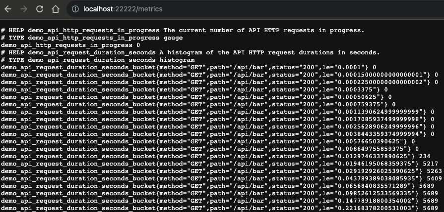

Service discovery - Exercise infrastructure
You'll be setting up the following architecture to support your service discovery exercises
using the services demo to ensure your local infrastructure contains the following:
Note that if you have any port conflicts on your machine, you can map any free port numbers you like, just adjust the rest of this workshop lab as you work through.
- Production 1 running at
http://localhost:11111 - Production 2 running at
http://localhost:22222 - Development running at
http://localhost:44444
Note that if you have any port conflicts on your machine, you can map any free port numbers you like, just adjust the rest of this workshop lab as you work through.
Service discovery - Podman setup assumptions
For the path of installing your exercise infrastructure using open source containers, we'll
assume you've setup Podman on your machine and that it's running, as you did in a previous
lab.
Services demo - Downloading the project
To install the services demo in a container we'll need the source project to build our
container. We're providing a self-contained project you can download, unzip,
and configure to build a container:
Click here to download the Prometheus Services Demo Installer.
Click here to download the Prometheus Services Demo Installer.
Services demo - Unzipping the project
Once you have downloaded the project using the link provided previously, just unzip into its
own directory as shown (Note: examples shown are on Mac OSX system):
$ unzip prometheus-service-demo-installer-v1.0.zip
creating: prometheus-service-demo-installer-v1.0/
inflating: prometheus-service-demo-installer-v1.0/.gitignore
inflating: prometheus-service-demo-installer-v1.0/README.md
creating: prometheus-service-demo-installer-v1.0/docs/
creating: prometheus-service-demo-installer-v1.0/docs/demo-images/
inflating: prometheus-service-demo-installer-v1.0/docs/demo-images/workshop.png
inflating: prometheus-service-demo-installer-v1.0/init.sh
creating: prometheus-service-demo-installer-v1.0/installs/
inflating: prometheus-service-demo-installer-v1.0/installs/README
creating: prometheus-service-demo-installer-v1.0/installs/demo/
inflating: prometheus-service-demo-installer-v1.0/installs/demo/Buildfile
inflating: prometheus-service-demo-installer-v1.0/installs/demo/Dockerfile
inflating: prometheus-service-demo-installer-v1.0/installs/demo/LICENSE
inflating: prometheus-service-demo-installer-v1.0/installs/demo/README.md
...
creating: prometheus-service-demo-installer-v1.0/support/
extracting: prometheus-service-demo-installer-v1.0/support/README
inflating: prometheus-service-demo-installer-v1.0/support/unzip.vbs
inflating: prometheus-service-demo-installer-v1.0/support/workshop-prometheus.yml
Services demo - Building a container image
Now you can build your own container image with the provided build file (output has been
abbreviated to save space):
$ podman build -t prometheus_services_demo:v1 -f installs/demo/Buildfile
[1/2] STEP 1/5: FROM golang:1.17-alpine AS builder
[1/2] STEP 2/5: WORKDIR /source
[1/2] STEP 3/5: COPY . /source
[1/2] STEP 4/5: RUN go mod download
[1/2] STEP 5/5: RUN go build -v -o prometheus_demo_service .
[2/2] STEP 1/4: FROM alpine:3
[2/2] STEP 2/4: COPY --from=builder /source/prometheus_demo_service /bin/prometheus_demo_service
[2/2] STEP 3/4: EXPOSE 8080
[2/2] STEP 4/4: ENTRYPOINT [ "/bin/prometheus_demo_service" ]
[2/2] COMMIT prometheus_services_demo:v1
Successfully tagged localhost/prometheus_services_demo:v1
f0f7afad800b643a40938e04c1dd2d6c394fb6c0197929e3db40df2e425a8127
Services demo - Verifying built image
Looking up our built images to verify everything went well, and we should see something like this:
$ podman images
REPOSITORY TAG IMAGE ID CREATED SIZE
localhost/prometheus_services_demo v1 231a2e5431b4 4 seconds ago 20.3 MB
docker.io/library/alpine 3 f6648c04cd6c 2 days ago 7.95 MB
docker.io/library/golang 1.17-alpine 0ebb35c98346 12 months ago 321 MB
Service discovery - Starting production 1
Now it's time to start the first production services demo environment, but not on the default
port, we want this to be on port 11111. To do that execute the services demo in a container
mapping our port 11111 to the containers exposed port 8080:
$ podman run -p 11111:8080 prometheus_services_demo:v1
07a253944161d5f5c472adb71a162a99cc0be5fe526c20e647b7213ffa0f66ee
Service discovery - Testing production 1
After starting the services container, it should have metrics scraping end points available so that
you can query them with PromQL. Test at
http://localhost:11111/metrics:

Service discovery - Starting production 2
Now we can create our second production services demo environment, but we want this to be on
port 22222. To do that execute the services demo in a container mapping our port 22222 to the
containers exposed port 8080:
$ podman run -p 22222:8080 prometheus_services_demo:v1
4ab834f72cf17a7e03fd5198b09d38c6a3e1ad9764d2231d22ed6129e6c16e8b
Service discovery - Testing production 2
After starting the services container, it should have metrics scraping end points available so that
you can query them with PromQL. Test this at
http://localhost:22222/metrics:

Service discovery - Starting development
Now we can create our final development services demo environment, but we want this to be on
port 44444. To do that execute the services demo in a container mapping our port 44444 to the
containers exposed port 8080:
$ podman run -p 44444:8080 prometheus_services_demo:v1
810d83f0e7cc49bf0047e043d0e80aab8b049ab19f1ac75723adefe9c51e49a1
Service discovery - Testing development
After starting the services binary, it should have metrics scraping end points available so that
you can query them with PromQL. Test this at
http://localhost:44444/metrics:

Intermezzo - Discovering container IP addresses
When using containers, Prometheus needs their container IP address as it can not resolve
localhost to different containers. To do this we can use the following variable provided
by Podman to update our Prometheus configuration
target lines to
automatically use the assigned IP address:
- target ["host.containers.internal:PORT_NUMBER"]
Note: if you are using Docker tooling, then your configuration should use the following variable
to automatically use the assigned IP address:
- target ["host.docker.internal:PORT_NUMBER"]
Service discovery - Prometheus setup assumptions
The rest of this exercise will focus on configuration of your Prometheus instance. For this path
of the service discover infrastructure setup, it is assumed you chose in the previous lab to
install Prometheus in a container, and have
done that.
Make sure you have a running instance and we'll pick up at editing the
Make sure you have a running instance and we'll pick up at editing the
workshop-prometheus.yml file and if you have not created one, you can create
a new one from scratch in the rest of this lab.
Service discovery - This completes setup using containers
Next up, we'll start using the file-based service discovery mechanism to feed a changing list
of custom targets to Prometheus during runtime and verify that it's dynamically discovering the
changes: